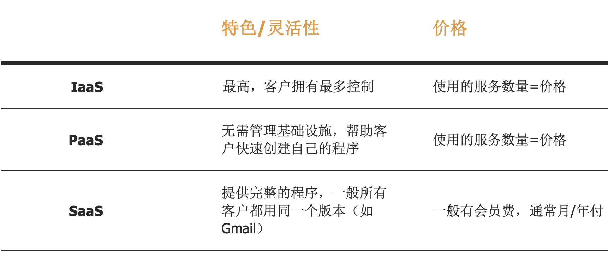

三种服务的基本区别
让我们先用一个生活化的例子来说明这三种服务的区别。
想吃🍓草莓蛋糕的话，生活中有四种方法可以达成愿望:
-
在家自己做(On-Premises)(本地部署)
- 从买新鲜草莓、蛋、面粉，到准备烤箱、裱花袋等，全部自己准备
- *自己构建一个数据中心
-
去烘焙工坊、料理教室之类的地方自己做(IaaS)(基础设施既服务)
- 工坊会提供各类设施、器材、食材等，只需要自己动手做出喜欢的蛋糕
- *通过租用的方式来使用基础设施服务，包括服务器、存储和网络等
-
通过美团外卖、饿了吗等外卖app送到家里(PaaS)(平台既服务)
- 只需要自己家里的餐桌和饮料就可以达成愿望
- *将一个完整的软件研发和部署平台，包括应用设计、应用开发、应用测试和应用托管， 都作为一种服务提供给客户
-
直接去蛋糕店吃蛋糕(SaaS)(软件既服务)
- 直接享受店家做好的蛋糕
- *使用云端服务供应商已经做好了的服务，由供应商全权处理
由此可见，三种服务的区分带来的最大优点就是产品的丰富性:客户可以通过自己的偏好(自己的云计 算有哪些方面只想托管让别人去做、哪些方面更想自己掌控、购买服务的预算等等)来挑选最适合自己的服务。
除此之外，这些服务还可以被组合使用。比如在公司的内部数据可以用腾讯云数据库 MySQL(IaaS) 来存储， 公司的内部发展应用可以用腾讯微服务平台(PaaS)来打造，并且公司员工之间的交流可以通过企业微信(SaaS)来实现。
三种服务的利用场景与价值
SaaS 的利用场景
-
首先，SaaS 的特点包括
- 中央管理，第三方提供服务器
- 通过互联网访问
- 用户无需关心软件/硬件的更新
- 综上所述，省钱省时间
-
由于以上的特点，我认为 SaaS 适合在以下场景使用:
-
公司需要制作一个短期project的情况
- SaaS可以在最快捷、简单、便利、以及预算不高的方式下解决问题
- 例子:Dropbox、百度网盘等各类网盘，腾讯会议等各类视频通讯应用， Microsoft365 等各类办公软件，JIRA 等各类 project 管理类软件等......此类可以直接使用的互联网软件
-
初创型公司/小公司很适合使用SaaS，尤其是需要迅速创建一个网络交易平台的公司
- 大部分小公司无法将大部分时间分配给解决技术问题(如服务器问题、软件问 题)，主要需要与客户的平台进行交互。这种时候，技术问题可以留给 SaaS 服务 的提供者来解决
- 例子:Salesforce、GitLab等
-
经常需要使用，特别是需要移动端的应用可以使用SaaS。
- 由于SaaS是通过互联网访问的，并且由第三方开发及更新，它的便利性非常适合 这个场景。
- 例子:QQ邮箱、企业微信等
-
公司需要制作一个短期project的情况
PaaS 的利用场景
-
比起 SaaS 那样直接通过互联网提供程序服务，PaaS 更像提供了一个创造程序的平台。它的主要优点有:
- 可以自己个性化定制
- 程序的开发和测试变得简单、高效、小成本
- IT部门可以集中精力做自己想做的事，无需担心软件更新、存储、基础设施等问题
- 多个用户可以同时访问同一个开发环境
-
综上所述，我认为 PaaS 适合以下使用场景:
-
公司内部程序需要实现自动化
- 很多公司有自己的一套工作流程，无法完全和某一个SaaS服务匹配。这种时候 PaaS 服务可以为公司提供一个发展自己自动化流程的平台，在公司能满足自己需 求的同时无需从头开发，节省了时间和成本
-
多个程序人员要同时开发同一个project的情况
- 这种情况下PaaS可以统一这些程序人员的工作流，防止未来可能有的分歧，加快工作效率，也方便大家分工合作。
- 同时这些程序人员也无需基础设施开始开发，可以少写很多代码，节约很多时间
- 例如:亚马逊AWSElasticBeanstalk的云计算服务可以帮助客户快速部署和管理AWS云上的程序，并且无需学习基础设施的相关知识
-
公司内部程序需要实现自动化
IaaS 的利用场景
-
IaaS 比起 SaaS 和 PaaS 提供的技术性服务，更像海底捞自助:客户需要什么菜就夹多少，不用像 在家做菜一样去菜场一样一样买菜(根据当下需求购买互联网资源，无需自行购买硬件)。IaaS 可以为客户提供各类存储、可视化服务、服务器等资源。它具有的优点是:
- IaaS提供的资源很容易替换，无需像购买硬件一样担心损失
- 可以根据需求来购买，减少了成本
- 最具有灵活性:IT部门拥有了对程序基础设施的掌控
-
因此，我认为 IaaS 适合在以下场景中运用:
-
大公司可以对自己的应用进行更全面的掌控
- 因为资源更加丰富，大公司也会更愿意去深入个性定制自己的应用
- IaaS比起另外两种模式具有更好的灵活性
-
成长型公司可以轻松替换服务
- 成长型公司/成长期的公司内部的技术要求更容易更新换代
- 比起自己购买硬件，即买即用的IaaS替换起来更容易，并且这样就不会在硬件的投资上出现损失
-
大公司可以对自己的应用进行更全面的掌控
三种服务的缺点与解决方法
SaaS 可进行的发展方向
-
如上所述，SaaS 最大的特点就是省钱省时间。但是有一些可能存在的缺点会使客户在购买服务时 犹豫。比如:
- 安全问题:由于SaaS基于公有云，在用它传输敏感的商业数据时有很多隐患
- 个性化问题:SaaS由于灵活性较小，有时无法完全匹配一个公司的需求
-
针对各类问题，我的解决方案是:
-
同一个SaaS服务下可以分成更小区间的价位，来满足不同的安全需求
- 比如企业邮箱与普通邮箱区分开的同时，将企业邮箱分为不同档位的安全性，比如CEO 用的超安全邮箱，和一般员工用的较为安全邮箱
- 区分完档位后，客户可以根据自己需求购买，而不会出现一刀切的情况导致失去部分客户。并且由于超级安全邮箱的数量相对较少，供应商可以实施更为复杂的保密措施
-
利用用户反馈增加SaaS下的“自定义”服务，实现分类计价
- 比如腾讯的订阅商业分析服务不一定能满足所有用户的分析需求，可能有一些用户 需要更多可视化分析，或者一些特定数据与商业分析服务要求的数据的形式不匹配
- 腾讯可以通过用户反馈来增加“高级可视化分析”作为可选功能的一种
- 比起卖一整个分析产品，腾讯可以卖一个“小工具套装”，分类计价后可 以提高 SaaS 的灵活性
-
同一个SaaS服务下可以分成更小区间的价位，来满足不同的安全需求
PaaS 可进行的发展方向
-
PaaS 目前可能存在的问题是市场欠缺标准化
- 由于缺少既定做法，不少企业采取保守策略不使用
- 另外，由于缺少标准化，企业在更换服务时可能会遇到很多数据迁移时产生的成本，从而对于采用 PaaS 打退堂鼓。
- 尤其是金融行业，对底层数据库的统一性有很高的要求，这时PaaS的缺乏标准化就会成为巨大的问题
- 供应商需要合作完成PaaS的标准化管理。这样能鼓励更多企业采用PaaS
-
除此之外，由于各类新兴技术正在不断完善，PaaS 需要加强对这些新兴技术的原生支持
- 比如客户可能想在自己的应用中添加IoT、AI、区块链等等的新兴技术，这时PaaS必须随着技术的发展而提高对新兴技术的原生支持
-
像SaaS增加灵活性一样，PaaS也可以增加自动化方面的服务
- 比如在用户可以自主操作的前提下，增加托管服务/一定程度的技术发展帮助服务，帮助 用户完成项目的实际落地
IaaS 可进行的发展方向
-
IaaS的主要问题在于公司自己要写很多码。像PaaS一样，我也认为IaaS可以提供托管服务
- 托管服务可以是技术发展帮助服务，也可以与另外两项服务联合发展
- 比如用腾讯的VM来储存数据，然后用相应的腾讯数据库PaaS产品来打造适合自己的分析软件，或直接使用腾讯的数据库SaaS软件
- 我认为联合发展可以在云服务发展的大时代背景下，更好地促进更多传统企业转向云计算和数据化，重点在于腾讯要做好行业标杆，吸引更多用户使用自己的产品套装